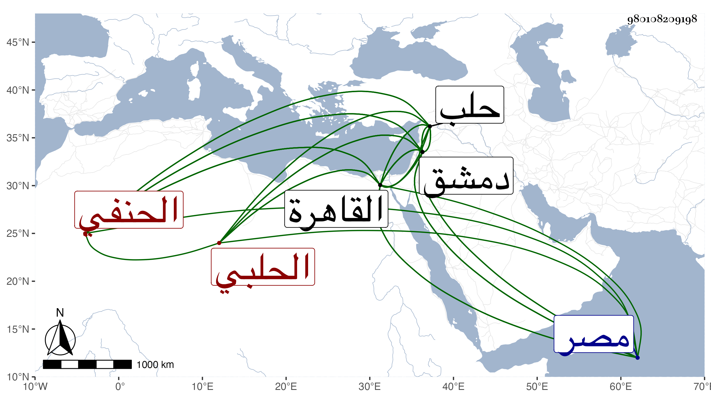

0902Sakhawi.DawLamic.ITO20230111-ara1.EIS1600.980108209198
Biography ID: 980108209198
9
طاهر بن الحسين بن عمر بن الحسن بن عمر بن حبيب بن شويخ الزين أبو العز ابن البدر أبي محمد الحلبي الحنفي ويعرف بابن حبيب . ولد بعد الأربعين وسبعمائة بقليل بحلب ، وسمع من إبراهيم بن الشهاب محمود وغيره ، وأجاز له من دمشق الشهاب أبو العباس المرداوي خاتمة أصحاب ابن عبد الدائم ومحمد بن عمر السلاوي وغيرهما ، ومن دمشق ابن القماح وغيره ، واشتغل وحصل ولازم الشيخين أبا جعفر الغرناطي وابن جابر وغيرهما وكتب الخط المنسوب وبرع في الأدب وغيره ونظم تلخيص المفتاح والسراجية في فرائض الحنفية ومحاسن الاصطلاح للبلقيني وشرح البردة وخمسها وذيل على تاريخ أبيه بطريقته ، ودخل القاهرة ودمشق وأقام في كل منهما مدة ، وكتب في ديوان الإنشاء ببلده وبالقاهرة بل ناب فيها عن كاتب السر وتعين للوظيفة مرارا فلم يتهيأ فيما قاله العيني قال وكان يتهم بشرب المسكر . وقال شيخنا في إنبائه إنه ولي عدة وظائف وأنه طارح الأدباء القدماء كفتح الدين بن الشهيد بأن كتب له بيتين فأجابه بثلاثة وثلاثين بيتا وطارح أيضا السراج عبد المطيف الفيومي نزيل حلب ونظم كثيرا وأحسن ما نظم محاسن الاصطلاح وليس نظمه بالمفلق ولا نثره ، وله قصيدة تسعة أبيات قافيتها عودي وبيت واحد فيما لا يستحيل بالانعكاس مع التزامه الحروف المهملة وهو ثاني أبيات قوله :
| أيا فاضلا في العلا سؤله | له العلم والحلم سارا معا |
| أعد حال ملك وحل عدو | ودع لحو كل ملاح دعا |
| ودم سالما لاعداك السرور | ولا رام سعدك ساع سعى |
وله :
| قلت له إذ ماس في أخضر | وطرفه ألبابنا يسحر |
| لحظك ذا أو أبيض مرهف | فقال لي ذا موتك الأحمر |
وقال ابن خطيب الناصرية : كان ناظما بليغا فصيحا تام الفضيلة في صناعة الإنشاء بحيث أنه عين لكتابة سر مصر قال ومن نظمه مضمنا :
| أضحى يموه وهو يعلم أنني | كلف به ولذاك لم يتعطف |
| فغدوت أنشد والغرام يهزني | روحي فداك عرفت أم لم تعرف |
وقوله في ضبط أشهر القبط :
| برمهات برمودة وبشنس | وبؤون أبيب مسري الحرور |
| ثم توت وبابة وهتور | وكيهك وطوبة أمشير |
وقال فيما يقرأ طردا وعكسا من المهمل بغير نقط وصدره بثلاثة أبيات هي ما عدا الأول منها مهملة وأعقبه ببيت آخر مهمل فقال :
| أيا فاضل ذلق مملق | وذا فطنة قلب رفعا |
| إمام أمام العلا سؤله | له العلم والحلم سارا معا |
| وكم همم للسها سروها | لها سودد سرها أطلعا |
| أعد حال ملك وحل عدو | ودع لحو كل ملاح دعا |
| ودم سالما لاعداك السرور | ولا رام سعدك ساع سعي |
وإليها أشار شيخنا كما تقدم مما يحتاج كل منهما لتحرير . وله لما قبض الظاهر برقوق على منطاش وقتله :
| الملك الظاهر في عزه | أذل من ظل ومن طاشا |
| ورد في قبضته طائعا | نعير العاصي ومنطاشا |
قال شيخنا اجتمعت به وسمعت كلامه وأظن أني سمعت عليه شيئا من الحديث ومن نظمه ولكن لم أظفر به إلى الآن . مات بالقاهرة في يوم الجمعة سابع عشر ذي الحجة سنة ثمان رحمه الله وعفا عنه . وقد ذكره شيخنا في معجمه أيضا والمقريزي في عقوده .
